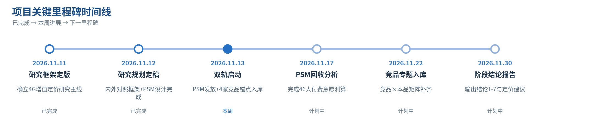

国内4G｜用户需求与机会研究
研究型周报 · 聚焦国内目标群体、场景、未满足需求与可行机会（G980H 4G增值服务）
数据周期：2026.11.07 - 2026.11.13 ｜ 尹燕玲
01 本周核心判断｜一句话
本周完成4G增值服务研究规划定版，研究主线升级为「竞品×本品对照」；PSM付费意愿问卷向46人公测群发放，并制定APP banner/push扩样方案解决样本量问题；4家大厂竞品锚点入库，新增小白牌4G玩法专题，11.30输出定价阶段结论。
02 项目核心指标｜填写实际数字与变化
| 指标 | 本周/累计 | 相较上周 / 目标 / 口径 |
|---|
| 有效研究样本（PSM） | 本周发放46人（公测群定向）；回收0（当日发放） | 目标：46公测用户全量回收 |
| 竞品品牌覆盖 | 本周新增4家大厂（70迈/盯盯拍/海康/凌度）；累计4家 | 目标：大厂6-8家+小白牌4G玩法专题（白牌在流量/云存上的创新玩法待挖掘） |
| 4G机会点（研究判断） | 识别3个：三线定价结构/首月免费转化/免费层权益 | 机会=人群×场景×付费意愿×可行性；待PSM+上市信号验证 |
03 关键进展时间线

2026.11.11
研究框架定版
确立4G增值定价研究主线
已完成
2026.11.12
研究规划定稿
内外对照框架+PSM设计完成
已完成
2026.11.13
双轨启动
PSM发放+4家竞品锚点入库
本周
2026.11.17
PSM回收分析
完成46人付费意愿测算
计划中
2026.11.22
竞品专题入库
竞品×本品矩阵补齐
计划中
2026.11.30
阶段结论报告
输出结论1-7与定价建议
计划中
04 本周关键成果与业务价值
| 本周成果/发现 | 数据或证据 | 落地影响 / 决策意义 |
|---|
| 研究框架升级：竞品×本品对照矩阵 | 规划外网部署；4家竞品×5维（流量/云存/套包/模式/免费层）初版建成 | 11.30阶段结论报告以矩阵为主章节，支撑定价竞争位置判断 |
| 竞品锚点信号 | 70迈流量续费60元/年 vs 本品109元/年（锚点风险）；凌度99元/年；盯盯拍硬件899赠6GB/年 | 流量档定价偏高风险进入结论6重点判断，需权益支撑 |
| 研究范围扩容：小白牌4G玩法专题 | 领导建议纳入：小白牌在4G流量/云存上的创新玩法（低价套餐组合、免费层设计等）可能更激进灵活 | 竞品研究不限于大厂对标，白牌创新模式为本品策略提供差异化参考 |
05 下周关键动作与可验收交付
| 下周动作 | 明确交付物及验收标准 | 负责人 / 日期 |
|---|
| PSM回收分析+扩样 | 公测群46人回收分析；APP banner/push发放扩大招募，提升有效样本量 | 尹燕玲/11.17起 |
| 竞品4G专题集中采集 | 大厂补齐6-8家收费+用户评价+购买人群三问；新增小白牌4G玩法专题采集 | 尹燕玲/11.22 |
| 11.30阶段结论报告 | 结论1-7成稿+竞品×本品矩阵完整版（含小白牌玩法启示） | 尹燕玲/11.29 |
06 风险与跨部门协同
① 京东评论接口对机房IP封锁，现依靠邹帅的codex慢速采集，采集速度和内容质量还有待优化；
② PSM样本仅46人公测群，样本量小，已定APP banner/push扩样方案对冲，扩样后样本结构偏差将收敛；
③ 产品11.19开卖、首月流量免费，真实付费转化信号需待12.19后，11.30结论以PSM+竞品对照为主。